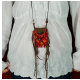
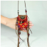

Vender en Scale

Notificaciones

Perfil

LaFabricadeLunas
Collar étnico inspirado en los bolsos Cheyene para transportar tabaco, la tela bordada perteneció a un antiguo sari de India y el cuero es upcicled. Todos loa abalorios son nuevos: Botón de metal, abalorios de Agata, madera, plástico, coco, barro, metal esmaltado, canuto y mostacilla, vidrio espejo, plata del tibet, bola de latón de India, canutillo rojo y gamuza cafe. Algunos abalorios han sido tratados para parecer antiguos. Este es un collar unisex. Puede abrirse para guardar tus tesoros!!!
Materiales: Madera, piel Dimensiones: Largo del collar: 20 Pulgadas Artículo hecho a mano Reciclado: Sí Largo ajustable: No Puede personalizarse: Sí
Listo para enviar en 3–5 días laborables Desde Santa Tecla, El Salvador No se aceptan devoluciones


Me encanto el collar, se ha convertido en uno de mis accesorios favoritos. Muchas gracias, la fabrica de lunas :)

Vino justo a tiempo y en muy buen estado, tiene excellentes acabados. Es una buena opción para poder regalarle a alguién.
